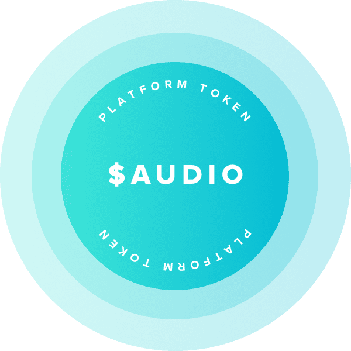

VOID enables network security, exclusive feature
access, and community-owned governance. The VOID protocol gives everyone the freedom to share,
monetize,
and listen to any audio. Thanks to $AUDIO,
our
users can earn a voice in the platform's future through active contributions to the network.
Our SoundCloud alternative helps artist monetize their work in creative ways by better engaging true
fans. We're here to create the future of streaming by giving users the means to shape VOID as the
recipients of $AUDIO tokens.
The protocol will live forever, owned and operated by decentralized community of artists, api, and
fans
collaborating to defend the world's music catalog.

Users stake $AUDIO to secure the platform, and in return receive a share of network fees, governance
weight, and exclusive feature unlocks.
To run discovery or content nodes
Providers get a high probability of fan disocvery and a share of network fees for securing the network.
To unlock exclusive features and services.
Artist may unlock services like artist tokens and badges, and receive voting power from fans who want to share in their success.